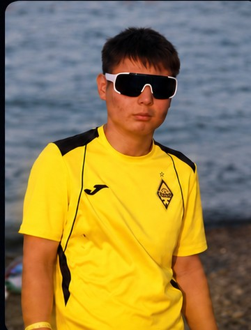
МЕН ТУРАЛЫ
Мен – Жәнібек
Мен 16 жасар жасөспіріммін. Атым Жәнібек. Менің өмірлік мақалам — «Жас кезің сенің болашағыңды құруға басты құндылық».
Пошта:zjoni84920@gmail.com
Номер:+7 707 578 6173

Мен 16 жасар жасөспіріммін. Атым Жәнібек. Менің өмірлік мақалам — «Жас кезің сенің болашағыңды құруға басты құндылық».
Менің негізгі бағыттарым мен жетістіктерім.
Маған хабарласу үшін төмендегі деректерді қолданыңыз.
Арманға апарар жол — ізденіс, еңбек және табандылық.
Мен жаңа нәрселерді үйренуге, өзімді әртүрлі бағытта дамытуға және командамен жұмыс істеуге қызығамын. Спорт, ұлттық дәстүр және қоғамдық орта менің өмірімде ерекше орын алады.
«Жас кезің сенің болашағыңды құруға басты құндылық». Әрбір тәжірибе — өзіңді дамытуға берілген мүмкіндік.
«Бір клуб – бір жанұя»
Қайрат футбол клубы тек футбол ғана емес. Ол ішкі атмосфера мен жанкүйерлер мен ішкі клубтың зор жұмыс. Ал мен Қайрат футбол клубында жүргеніме шамамен 5 жыл уақыттан асты. Ең алғаш мен жанкүйер ретінде 3 жыл «Қайра махабатым» деген ұйымда жүрдім. Содан соң 1 жыл еріктілер қатарына қосылып жұмыс атқардым. Ал қазіргі таңда мен клубтың маскоты болып жұмыс жасаймын.
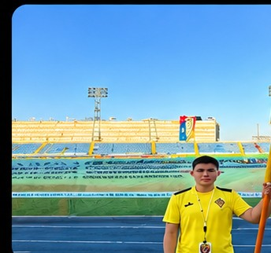
«Ауыл – ел бесігі»
Мен жас кезімнен ауылға қызығушылығым мол. Оған себепші болған басты себепкер — менің атам Бердәлі. Ол ауылда маған қазақ халқының атадан балаға келе жатқан салт дәстүрі мен құндылықтарын түсіндіріп үйретті. Ал қазіргі таңда мен ауылымды дамыту мен өркендетуге бар күш жігерімді салып келе жатырмын.
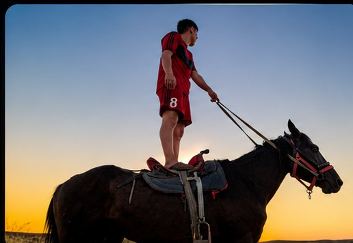
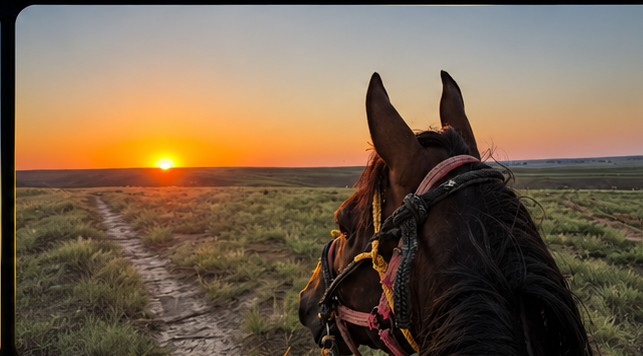
«Дәлдік пен тәртіп – жеңістің кілті»
Мен дәстүрлі садақ атуға 2020 жылы келдім. Бұл спортқа келуімнің басты себепшісі — менің бапкерім Жүкейхан ағай. Садақ атудан қалалық жарыста 1 орын иегері атандым. Қазіргі уақытта кәсіби түрде садақ атып қана қоймай, төреші қызметін де атқарамын.
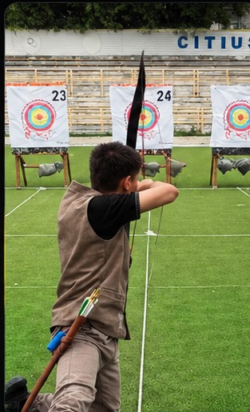
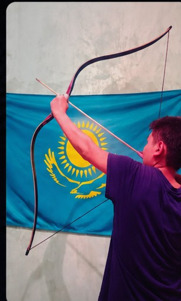
«Ерлік – елдің тірегі»
Әскер ол тек тәртіп қана емес. Әскер ол ер жігітті төзімділік пен табандылыққа сынайтын жер. Ал маған келетін болсақ, мен әскерге мектеп кезінен қызығып келемін және сол қызығушылығымды колледжге келіп іске асырдым. Қазіргі таңда Алматы қаласының жас сарбаз құрама командасының өкілімін.
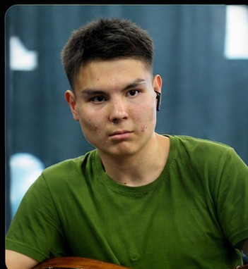
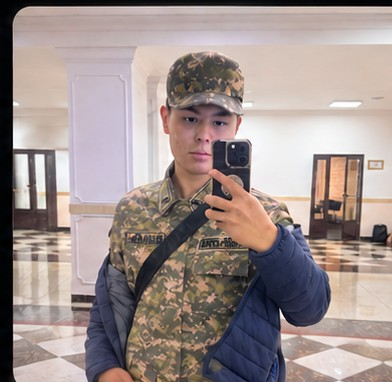
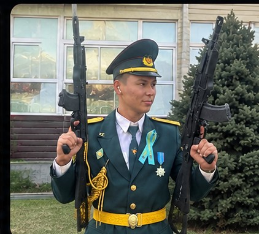
Қызмет бағытын таңдаңыз және прайс-листпен танысыңыз.
Almaty Team Events — прайс-лист
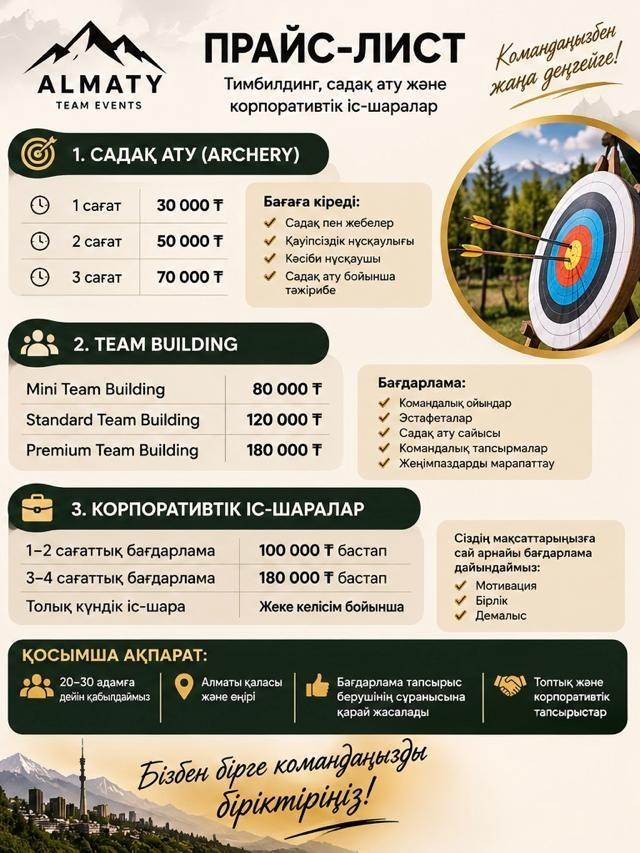
Алматы қаласы — 2026 прайс-листі
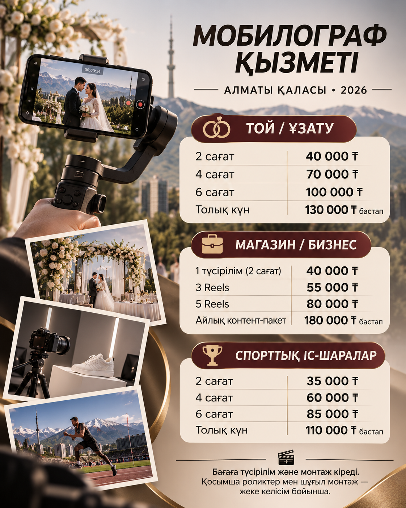
Almaty — Photographer Price List
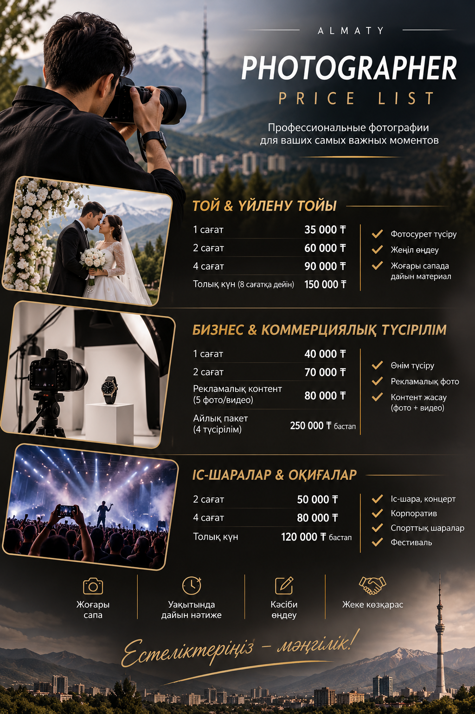
Менің әлеуметтік желілерім
Мені TikTok және Instagram желілерінен табыңыз.